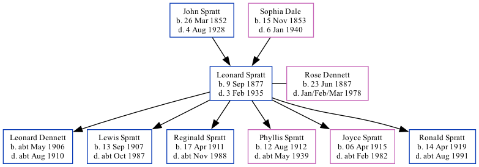

Leonard Spratt 1877 - 1935
[ Home ] | [ Calendar ] | [ Surnames Index ] | [ Family History ]The son of John Spratt and Sophia Dale, Leonard Spratt, the great-uncle of <a href="I1.html">Nigel Horne</a>, was born in St Nicholas-at-Wade, Kent, England on Sep 9, 1877<span class="citation">1,2,3,4,5,6,7</span>, was baptized there on Oct 21, 1877 and married Rose Dennett (with whom he had 6 children: <a href="I2919.html">Leonard Muskett S</a>, <a href="I317.html">Lewis George</a>, <a href="I2217.html">Reginald John</a>, <a href="I319.html">Phyllis Rose</a>, <a href="I2216.html">Joyce Catherine</a> and <a href="I318.html">Ronald Ernest</a>) in Thanet, Kent, England around Aug 1906<span class="citation">9</span>. Like his father, he was an agricultural laborer. </p><p>Leonard spent all of his life in Kent, England. Throughout his life, he lived in several places around the county: at The Street in St Nicholas-at-Wade on Apr 3, 1881<span class="citation">12</span>; at Shuart Cottage, Podden Street in St Nicholas-at-Wade on Apr 5, 1891<span class="citation">13</span>; on 11 Grotto Road, Cliftonville on Apr 2, 1911<span class="citation">14</span>; at 11 Upper Grove, Cliftonville on Jun 19, 1921<span class="citation">4</span> and in 1929<span class="citation">10</span>; and at 65 Fitzroy Avenue, Cliftonville in 1935<span class="citation">11</span>. He served in the navy from Apr 24, 1899 to Aug 11, 1919 (<em>Royal Navy: Service number: 291903</em>). Leonard In 1921 he was working at Margate Gas Works on Addington Street, Margate, Kent, England.<p>He died on Feb 3, 1935 in Thanet<span class="citation">6,8</span>.
Parents
- John was born on Mar 26, 1852
- Sophia was born on Nov 15, 1853
Children
- Leonard Muskett S was born c. May 1906
- Lewis George was born on Sep 13, 1907
- Reginald John was born on Apr 17, 1911
- Phyllis Rose was born on Aug 12, 1912
- Joyce Catherine was born on Apr 6, 1915
- Ronald Ernest was born on Apr 14, 1919
Citations
- 1881 England Census Online publication - Provo, UT, USA: The Generations Network, Inc., 2004. 1881 British Isles Census Index provided by The Church of Jesus Christ of Latter-day Saints © Copyright 1999 Intellectual Reserve, Inc. All rights reserved. All use is subject to the
- 1891 England Census Online publication - Provo, UT, USA: The Generations Network, Inc., 2005.Original data - Census Returns of England and Wales, 1891. Kew, Surrey, England: The National Archives of the UK (TNA): Public Record Office (PRO), 1891. Data imaged from The National
- 1911 England Census Online publication - Provo, UT, USA: Ancestry.com Operations, Inc., 2011.Original data - Census Returns of England and Wales, 1911. Kew, Surrey, England: The National Archives of the UK (TNA), 1911. Data imaged from the National Archives, London, England.
- 1921 Census Of England & Wales - Findmypast (was age 43 and the head of the household)
- British Royal Navy Seamen 1899-1924 - Findmypast
- England & Wales, Death Index: 1984-2005 Online publication - Provo, UT, USA: The Generations Network, Inc., 2007.Original data - General Register Office. England and Wales Civil Registration Indexes. London, England: General Register Office. © Crown copyright. Published by permission of the Cont
- England & Wales, FreeBMD Birth Index, 1837-1915 Online publication - Provo, UT, USA: The Generations Network, Inc., 2006.Original data - General Register Office. England and Wales Civil Registration Indexes. London, England: General Register Office. © Crown copyright. Published by permission of the Cont
- England & Wales deaths 1837-2007 - Findmypast
- England & Wales, FreeBMD Marriage Index: 1837-1915 Online publication - Provo, UT, USA: The Generations Network, Inc., 2006.Original data - General Register Office. England and Wales Civil Registration Indexes. London, England: General Register Office. © Crown copyright. Published by permission of the Cont
- 1929 Kelly's Thanet Directory
- 1935 Kelly's Thanet Directory
- 1881 England, Wales & Scotland Census - Findmypast (was age 3 and the son of the head of the household)
- 1891 England, Wales & Scotland Census - Findmypast (was age 13 and the son of the head of the household)
- 1911 Census for England & Wales - Findmypast (was age 33 and the head of the household)
Media
Leonard Spratt - Naval Record

1935 Kelly's Thanet Directory
1911 Census for England & Wales - GBC/1911/RG14/04496/0591/1
England & Wales births 1837-2006 - BMD/B/1877/4/AZ/000533/039
England & Wales marriages 1837-2008 - BMD/M/1906/3/AZ/000381/198
England & Wales deaths 1837-2007 - BMD/D/1935/1/AZ/000964/065
British Royal Navy Seamen 1899-1924 Transcription - GBM-ADM188-41267
England Births & Baptisms 1538-1975 - R_884659185
Kent Baptisms - GBPRS/CANT/B/96802102
1921 Census Of England & Wales - GBC/1921/RG15/04446/1189/04
Family Tree
Generated by Ged2Site. Last updated on Jul 20, 2025